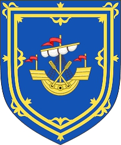

12017903 Matilde (Maud) of The Orkneys
Blev ca 69 år.

Född:
omkring 1178 Orkney Islands, Scotland.
Död:
1247 Scotland.
Barn med
12017902 Earl Robert of Strathearn (1176? - 1245)
Barn:
Matilda of Strathearn (1230? - )
Personhistoria
Årtal
Ålder
Händelse
1178?
Födelse omkring 1178 Orkney Islands, Scotland
1230?
Dottern
6008951 Countess Matilda of Strathearn
föds omkring 1230 Scotland
[1]
1245
Partnern
12017902 Earl Robert of Strathearn
dör 1245 Ruthven, Pearth, Scotland
[1]
1247
Död 1247 Scotland
Källor
[1]
Wikitree